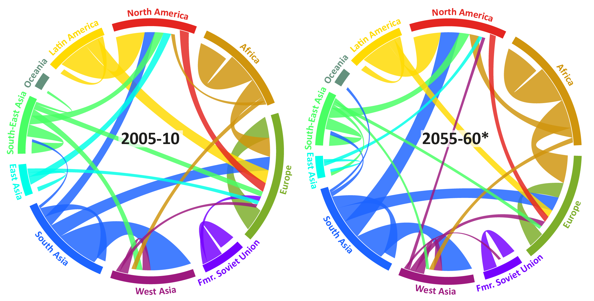

Myths and facts on migration in Europe and the global context
Nikola Sander
Vienna Institute of Demography
People have migrated for 60,000 years
Why people migrate
- economic (eg higher wages)
- family (eg marriage)
- housing (eg larger flat)
- education (eg attending university)
- violent conflict
A rising tide of mass migration?
For every 1,000 people worldwide, how move over 5-year periods?
Migration can be defined in many different ways
Two types of migration data:
flows & stocks
Our estimates: 0.6% of the world's population move over 5-year periods

Abel & Sander (2014)
Quantifying Global International Migration Flows
Science, vol. 343: 1520-1522.
How to explore a matrix of flows
between 196 countries?
A traditional migration flow map
Circos: a source of inspiration
Circular migration plot
Segment length shows a region's migration volume in millions.
Flows have the same colour as their origin.
www.global-migration.info
Migration in Europe
A data jungle
Population registers capture immigration and emigration through self-declaration
2 problems:
- > lack of incentives for deregistration
- > the time criterion used to identify migrants is based on intended duration of stay and varies from 3 days to 1 year
Research aims at harmonising register-based data, eg IMEM Project (Southampton)
IMEM,
median estimate,
2008
What about the future?
Will sub-Saharan population growth result in mass emigration to Europe?
The global migration system
in 2005-10 and in 2055-60

* iterative proportional fitting was used to estimate flows from projected numbers of in-migrants and out-migrants
Refugee flows triggered by violent conflict make projecting international migration difficult.
The global flow
of refugees in 2014
www.global-refugees.info
Migrants or refugees?
Refugees protected by international law (1951 Convention)
Dublin III protocol
Asylum application only from inside the EU
Distribution of refugees within the EU
A common immigration policy?